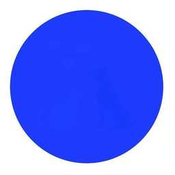

author: niplav, created: 2019-03-20, modified: 2022-06-23, language: english, status: in progress, importance: 6, confidence: log
If you take away just one thing from this website, it should be that I think you would want to sign up for cryonics after careful deliberation.
This is the website of niplav. It contains texts on different topics, including (but not limited to) programming, unusual social behavior and philosophy, as well as translations and transcriptions of different texts, chronological archives of blogs and programming projects. More information about the website and its author can be found on the about page, for recent additions and changes, see the changelog.
I try to read blogs completely, mostly starting at the beginning because most blogs are not organized by topic (tagging/categorization systems don't count, don't be ridiculous). But blog archives are usually hard to navigate and it is often difficult to keep track of my current position in the blog (especially with yearly/monthly WordPress archives). To salvage this, I scrape blog archives and arrange them chronologically.
I sometimes write reviews of things I have watched/read.
The following is four lists on the content I consume. The content listed there is a fairly big subset of what I actually read/listen to/watch, but not complete. I also don't remember everything from these perfectly.